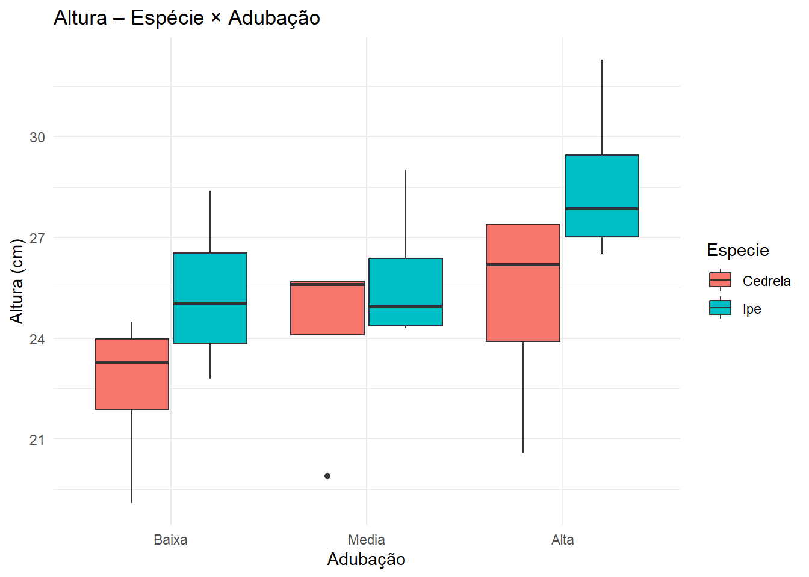
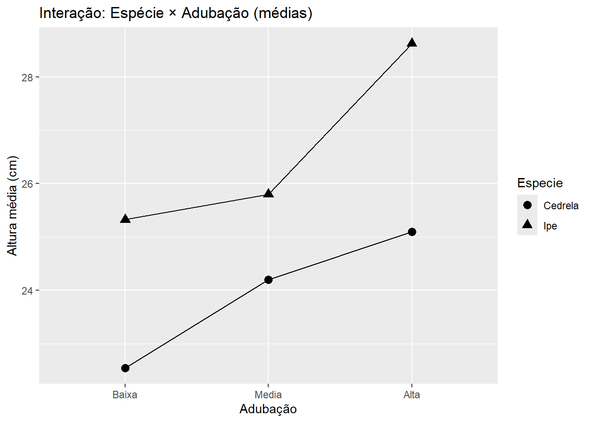

9📖 Capítulo 7 – Delineamento em Parcelas Subdivididas (Split-Plot)
Módulo 2 – Semana 9
9.1 🌱 Narrativa inicial
Em muitos experimentos florestais, alguns fatores são difíceis de controlar (ex.: espécie, espaçamento de plantio, preparo de área), enquanto outros são fáceis (ex.: adubação dentro de uma bancada, fungicida por pulverização).
Quando isso acontece, o delineamento em parcelas subdivididas (split-plot) é o caminho natural — ele respeita as restrições operacionais e usa duas fontes de erro (parcela e subparcela) para testar os efeitos apropriadamente.
9.2 🎯 Objetivos
Entender por que/quando usar split-plot.
Distinguir fator de parcela vs fator de subparcela.
Error: Bloco
Df Sum Sq Mean Sq
Bloco 3 69.93 23.31
Error: Bloco:Especie
Df Sum Sq Mean Sq F value Pr(>F)
Especie 1 41.61 41.61 2.441 0.216
Residuals 3 51.13 17.04
Error: Within
Df Sum Sq Mean Sq F value Pr(>F)
Adubacao 2 35.08 17.538 55.021 9.04e-07 ***
Especie:Adubacao 2 3.77 1.883 5.907 0.0164 *
Residuals 12 3.83 0.319
---
Signif. codes: 0 '***' 0.001 '**' 0.01 '*' 0.05 '.' 0.1 ' ' 1
9.4.2 📊 Visualizações
Código
ggplot(dados, aes(Adubacao, Altura_cm, fill = Especie)) +geom_boxplot(position =position_dodge(width =0.8)) +labs(title ="Altura – Espécie × Adubação",x ="Adubação", y ="Altura (cm)") +theme_minimal()

Código
medias <- dados %>%group_by(Especie, Adubacao) %>%summarise(media =mean(Altura_cm), .groups ="drop")ggplot(medias, aes(Adubacao, media, group = Especie, shape = Especie)) +geom_point(size =3) +geom_line() +labs(title ="Interação: Espécie × Adubação (médias)",x ="Adubação", y ="Altura média (cm)")

9.4.3 🧩 Interpretação
Espécie é testada com erro de parcela → menor precisão.
Adubação e Especie×Adubacao usam erro de subparcela → maior precisão.
Se houver interação, a adubação ótima depende da espécie.
9.5 🌾 EXERCÍCIO — Espaçamento × Fungicida em campo jovem
Contexto
Alterar Espaçamento exige maquinário e planejamento (difícil) → parcela. Pulverizar Fungicida é fácil e pode ser feito dentro das parcelas → subparcela. Objetivo: reduzir incidência de doença.